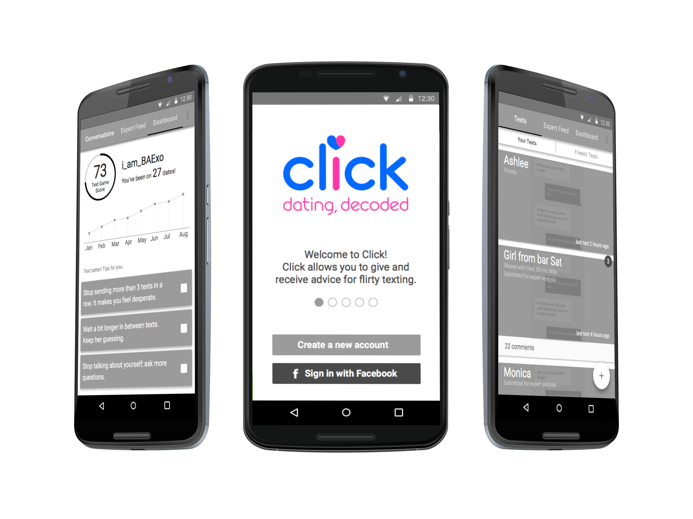
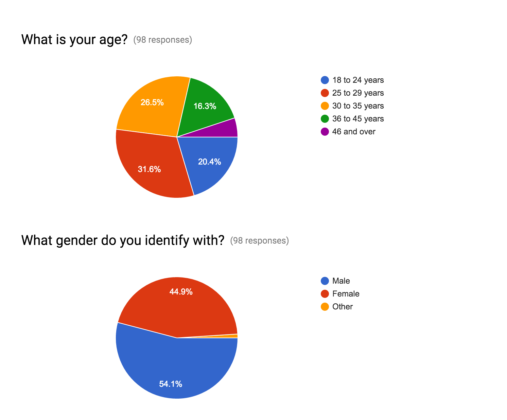
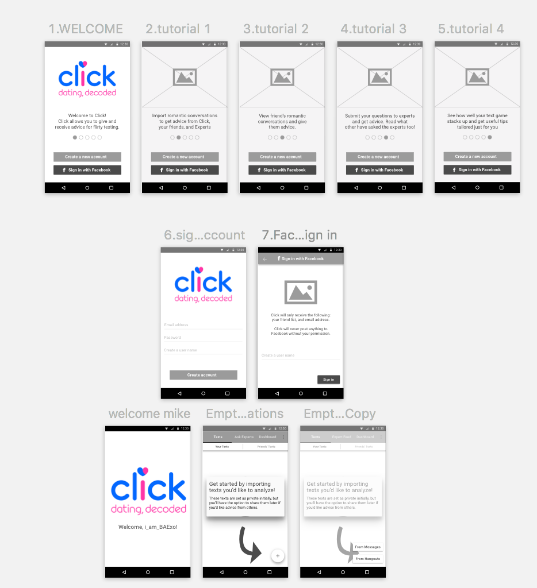
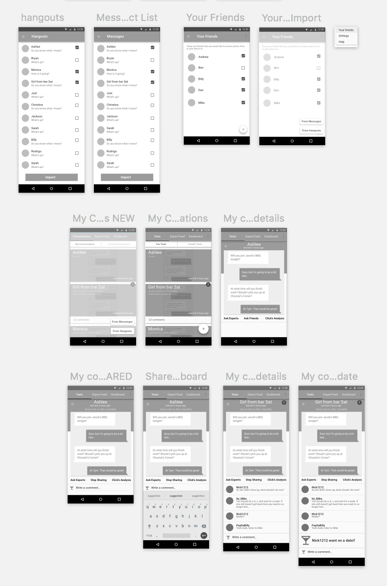
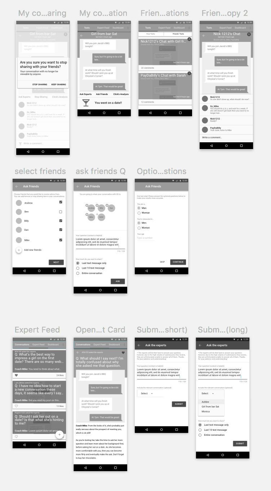
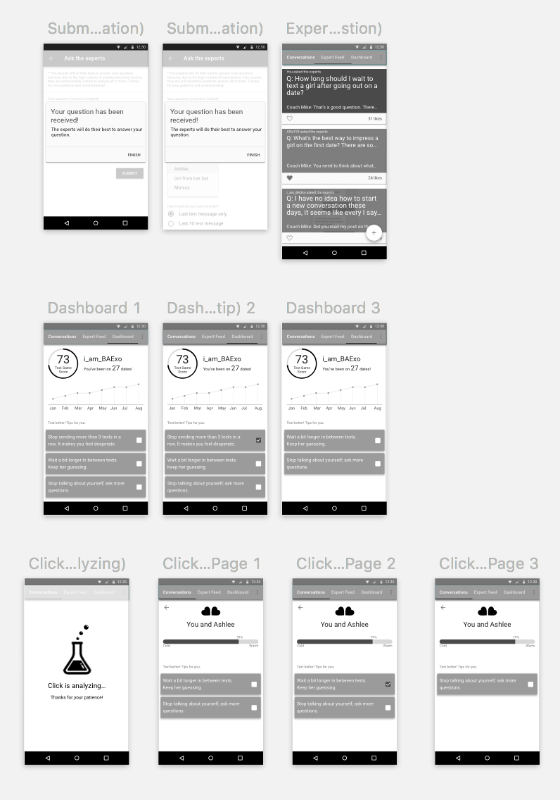

Click
Analytics Engine for Romantic Texting Android App Redesign
About The Project
This is a current client engagement with a researcher and another UX designer. We are doing a full-scale redesign from the ground up of the app. The developer created a powerful analytics engine to analyze text messages during dating and wants to flesh out the app.
Research Phase
For the research phase of the project we surveyed 98 people and interviewed over 20 current and potential users. We wanted to learn what features people liked, whether the current structure of the app made sense, and areas we could focus on for improvement.
Process
Out of research came our feature list that we categorized.

We broke the features down further into buckets. Our goal was to determine the top-level navigation and to prioritize based on this.

We whiteboarded how to split the buckets up, how navigation should look, and what information individual user types would need to see. It ended up getting broken down into Conversations, Expert Advice, and Dashboard. We realized that users had different levels of privacy concerns and these needed to be addressed by the app's design.

I began sketching out the app interface, this went through several iterations. Once I had a pattern I liked, I'd show it to potential users for feedback and iterate based on suggestions.

Wireframes
The wireframes went through five iterations. We worked with developer to learn more about feature feasibility and scope.
   Prototype
Check out the interactive prototype in Marvel here. Marvel does a great job of letting you work on the actual device to test interactions. Our current vision isn't animation heavy or I'd use Framer instead.
Next Steps
Visual treatment is underway, I'll post the results here with an updated prototype when I finish the project.